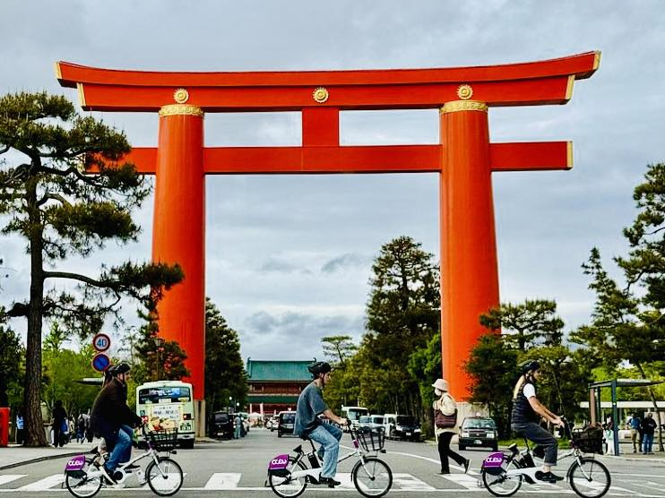
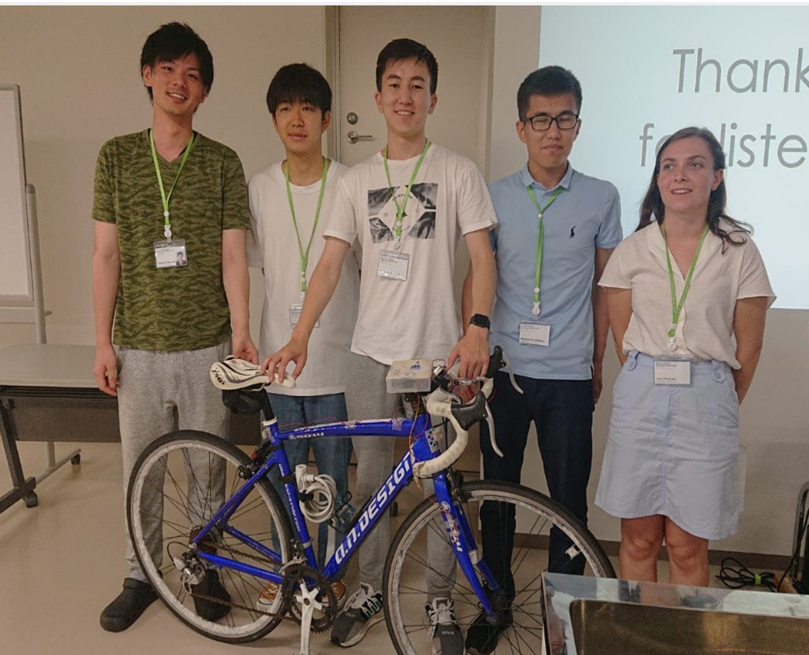

Bicycle Speedometer
— Kyoto Award 2019
My first ever international tournament project. A low-cost, hackable speedometer using a Hall-effect sensor and magnet system, built and presented at the KIT Summer School in Kyoto. Won the Excellence in Electronics award.
Metadata
Tech Stack
Theory & Concept
The Bicycle Speedometer project was designed as an affordable and reliable alternative to commercial speedometers, using a simple Hall-effect sensor and magnet system to measure wheel rotations. Inspired by Kyoto's cycling culture — the prefecture with the highest bicycle usage in Japan due to its flat terrain and iconic destinations — the module calculates both velocity and distance in real time, with an added night mode for evening rides.
The core principle relies on magnetic field detection: a small magnet attached to a bicycle wheel generates a pulse each time it passes a Hall sensor mounted on the fork. By counting these pulses over time, the firmware calculates both instantaneous speed and total distance traveled.


Electronics & Hardware
The electronic design focuses on simplicity and reliability. An Arduino Nano serves as the main controller, paired with a digital Hall sensor (A3144) for magnetic field detection. The system includes an I²C LCD display for real-time feedback, a servo motor for analog speed indication, and automatic lighting control based on ambient light conditions.

Results
The project achieved remarkable success, winning the Excellence in Electronics award at the KIT Summer School in Kyoto, 2019. The speedometer demonstrated excellent accuracy and reliability across various testing conditions.


Next Steps & Future Work
While the current implementation successfully meets the project objectives, there are several areas for future improvement and expansion that could make the system even more versatile and user-friendly.
-
arrow_forward
Smart Auto-On via Seat SensorsSeat-pressure sensors wake the speedometer as soon as the rider sits down.
-
arrow_forward
Handlebar Display with Local AnalyticsLive speed and ride stats render on a compact handlebar display while an SD card stores raw logs for later analysis and sync.
-
arrow_forward
Toward Assisted / Autonomous ControlGPS/IMU — and later vision — enable lane-keeping and obstacle-aware assistance in controlled tests, progressing toward low-speed autonomy. Safety gates, geofencing, and kill-switches are built in.
-
arrow_forward
Kinetic Energy HarvestingA micro-dynamo (wheel/hub/chain drive) converts mechanical motion into electrical power to recharge the unit; solar remains a secondary source.
Acknowledgements
This project would not have been possible without the support and guidance of many individuals and organizations who contributed their time, expertise, and resources to make this vision a reality.
- check_circle KIT Summer School — for providing the platform and opportunity to present this work
- check_circle Faculty Advisors — Prof. Kazuo Takahashi and Prof. Laifa Boufendi
- check_circle Team members — Hiroki Hayashi, Ego Ito, Slamiya Mauletbek, Martinet Alice